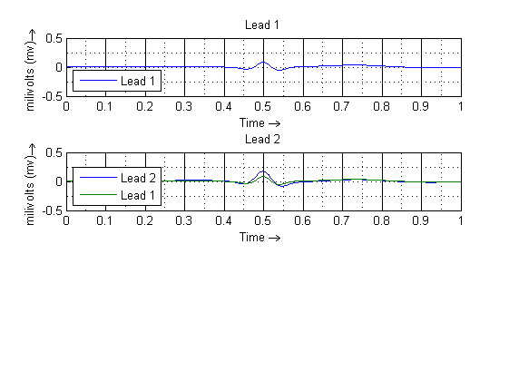
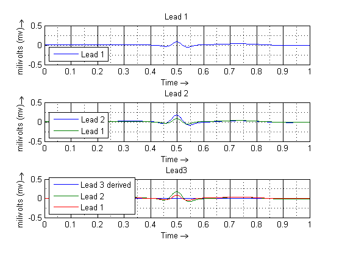
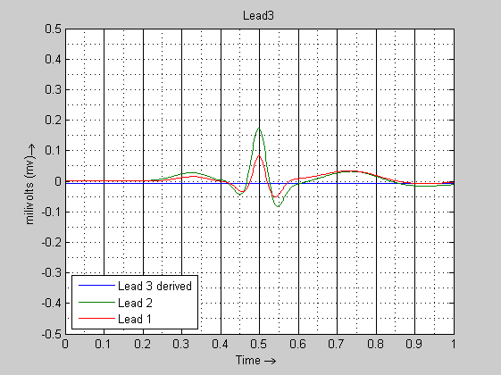
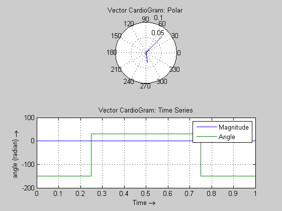

Contents
% ECGSYN % Version 0.7: ECG Validation: Attemtps % using datafile: ecg_normal.gif % Version 0.6: 3 Vector CardioGram: Polar & Time Series % Also explored; lead2 derived from lead1. % Version 0.5: 3 Lead ECG (realistic); Polar Plot; % Version 0.4: 2 Lead ECG % Version 0.3: Baseline drift % Version 0.2: X,Y,Z phase Sim % Version 0.1: Crude Simulation % X,Y Phase and State Trajectories plot; No Z. clear all; clc;
t0 = 0; tf = 1; x0 = -0.1; y0 = 0; z0 = 0; options = odeset('OutputFcn',@odephas3); datapts = 500; tspan = [t0:tf/(datapts-1):tf]; global thetai global heighti global widthi configEcgSyn(1); [T1,Y1] = ode45(@ecgsynSolver, tspan, [x0 y0 z0], options); configEcgSyn(2); [T2,Y2] = ode45(@ecgsynSolver, tspan, [x0 y0 z0], options); subplot(3,1,1); plot(T1, Y1(:,3)); legend('Lead 1','Location','SouthWest'); xlabel('Time \rightarrow '); ylabel('milivolts (mv) \rightarrow '); grid on; grid minor; title('Lead 1'); ylim([-0.5 0.5]); subplot(3,1,2); plot(T2, Y2(:,3), T1, Y1(:,3)); legend('Lead 2', 'Lead 1','Location','SouthWest'); xlabel('Time \rightarrow '); ylabel('milivolts (mv) \rightarrow '); grid on; grid minor; title('Lead 2'); ylim([-0.5 0.5]);
Configuring lead 1 - Normal (lesson3:ecg_normal.gif) Configuring lead 2 - Normal (lesson3:ecg_normal.gif)
calculate Cardiac Dipole
Linear Transformation Matrix - M = [1 0; -1/sqroot(3) 2/sqrt(3)]
display 'Derive Dipole'; display 'Derive Lead 3'; r3 = sqrt(3); %root3 M = [1 0; -1/r3 2/r3]; D = zeros(datapts,4); Y3 = zeros(datapts,1); for i=1:datapts D(i,1:2) = M*[Y1(i);Y2(i)]; % (x,y) D(i,3) = D(i,1)^2+D(i,2)^2; % Magnitude D(i,4) = atan2(D(i,2),D(i,1))*180/pi; % Angle Y3(:,i) = -D(i,3)/2*cos(D(i,4)-r3/2*sin(D(i,4))); end
Derive Dipole Derive Lead 3
subplot(3,1,3); plot(T1, Y3(:,1), T2, Y2(:,3), T1, Y1(:,3)); legend('Lead 3 derived','Lead 2','Lead 1','Location','SouthWest'); xlabel('Time \rightarrow '); ylabel('milivolts (mv) \rightarrow '); grid on; grid minor; title('Lead 3'); ylim([-0.5 0.5]); title('Lead3');
figure; plot(T1, Y3(:,1), T2, Y2(:,3), T1, Y1(:,3)); legend('Lead 3 derived','Lead 2','Lead 1','Location','SouthWest'); xlabel('Time \rightarrow '); ylabel('milivolts (mv) \rightarrow '); grid on; grid minor; title('Lead 3'); ylim([-0.5 0.5]); title('Lead3');
Vector CardioGram
figure; subplot(2,1,1); display 'Vector CardioGram: Polar'; polar(D(:,4),D(:,3)); grid on; title('Vector CardioGram: Polar'); subplot(2,1,2); plot(T1,D(:,3),T1,D(:,4)); legend('Magnitude','Angle'); title('Dipole'); display 'Vector CardioGram: Time Series'; grid on; title('Vector CardioGram: Time Series'); xlabel('Time \rightarrow '); ylabel('angle (radian) \rightarrow ');
Vector CardioGram: Polar Vector CardioGram: Time Series